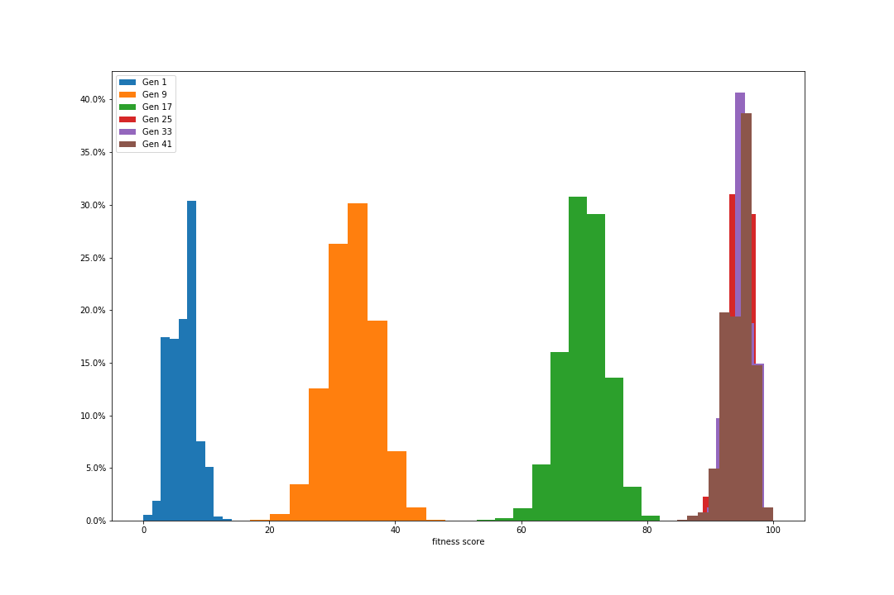
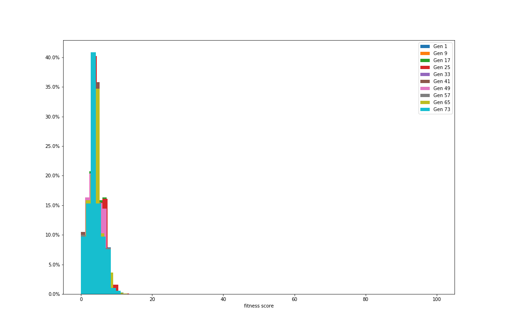

We simulate the Natural Selection by picking the most "fitted" candidates for the password in each generation, and evolve them for the next generation.
1. Fitness Function: Evaluation of our candidate in the environment. Here our environment is the password, and the Fitness function is used to generate a fitness score for our candidate, which decides whether it succeeds in the evolution. For simplicity, our password will be a string of lowercase characters.
2. Initial Population: In this basic application, we assume the initial population is entirely random, by creating a set of strings with random lowercase characters.
3. Breeder(Natural) Selection: The Core Process of Darwin's evolution. We only select/allow the top candidates (base on their fitness scores) to reproduce offsprings, and also pick a small collection of strings randomly to add some environment uncertainty.
4. Genetic Crossover: When producing offsprings, genes from parents are combined. This process is called Chromosomal crossover in biology. Here, each character in the offsprings has the same chance of coming from either parent.
5. Mutations: Fraction of genes are shifted at random. Here, we pick some percentage of the offspring candidates at random and mutate only one of their string characters.
Basic Tuning Parameters and default values:
Password Length = 100Initial Population Size = 10000
Top Breeder Selection = 22%
Lucky Breeder Selection = 3%
Children Per Couple = 8
Mutation Rate = 1%
With default parameters, we found the password in the 24th generation. When the population converges, the median fitness score is around 95.0. The following plot shows the distributions of the fitness of the candidates at various generations.
By using a wider Breeder Selection (using 50% from Top Breeder) and ignore Lucky Breeder (as it turns out insignificant), we found the password in the 34th generation. When the population converges, the median fitness score is around 94.0. It is apparent that this convergence is much slower in comparison.

In contrast, using random selection instead of Breeder Selection, we could not find the password even at 80th generation. No improvement over generations.
Observations: In plots not shown here, we also observed that Mutation Rate and Lucky Breeder Selection do not have much influence on the convergences and distributions, for this particular application.
#1. Fitness Function:
def fitness(password, test_word):
if (len(test_word) != len(password)):
print("Length incompatible!")
return
else:
score = sum([password[i] == test_word[i] for i in range(len(password))])
return score*100/len(password)
#2. Initial Population:
def getRandomChar():
return random.choice(string.ascii_lowercase)
def generateAWord(length):
return "".join(getRandomChar() for _ in range(length))
def generateFirstPopulation(length, popsize):
return [generateAWord(length) for _ in range(popsize)]
#3. Natural/Breeder Selection:
def getPopulationSortedByFitness(population, password):
return sorted(population, key=lambda x: fitness(x, password), reverse=True)
def selectFromSortedPopulation(sorted_population, best_pop, lucky_pop):
nextPopulation = []
for i in range(best_pop):
nextPopulation.append(sorted_population[i])
for i in range(lucky_pop):
nextPopulation.append(random.choice(sorted_population))
random.shuffle(nextPopulation)
return nextPopulation
#4. Breeding/Genetic Crossover:
def createAChild(parent1, parent2):
child = ""
for i in range(len(parent1)):
if random.random() < 0.5:
child += parent1[i]
else:
child += parent2[i]
return child
def createChildren(breeders, child_number):
children = []
for i in range(1, len(breeders), 2):
children += [createAChild(breeders[i], breeders[i-1]) for _ in range(child_number)]
random.shuffle(children)
return children
#5. Mutation:
def mutateWord(word):
index = int(random.random()*len(word))
return word[:index] + getRandomChar() + word[index+1:]
def mutatePopulation(population, mutation_rate=0.1):
for i in range(len(population)):
if random.random() <= mutation_rate:
population[i] = mutateWord(population[i])
return population
#Main Loop:
def main():
PASSWORD = generateAWord(100)
FIRST_POP_SIZE = 10000
BEST_POP_SIZE = 0.22
LUCKY_POP_SIZE = 0.03
CHILDREN_NUMBER = 8
MUTATION_RATE = 0.01
TOTAL_GEN = 40
PLOT_SLICES = 5
plt.figure(figsize=(15,10))
found = False
iteration = 1
while not found:
if iteration == 1:
population = generateFirstPopulation(len(PASSWORD), FIRST_POP_SIZE)
print("Iteration: ", iteration)
print("Population: ", len(population))
population = getPopulationSortedByFitness(population, PASSWORD)
breeders = selectFromSortedPopulation(population, int(BEST_POP_SIZE*len(population)), int(LUCKY_POP_SIZE*len(population)))
children = createChildren(breeders, CHILDREN_NUMBER)
nextPopulation = mutatePopulation(children, MUTATION_RATE)
if iteration % (TOTAL_GEN//PLOT_SLICES) == 1: getHistogram(PASSWORD, nextPopulation, iteration)
if foundPassword(nextPopulation, PASSWORD):
print("PASSWORD FOUND!")
if iteration > TOTAL_GEN: found = True
print(nextPopulation.count(PASSWORD)/len(nextPopulation)*100, "%")
print("median: ", fitness(PASSWORD, sorted(nextPopulation, key=lambda x: fitness(x, PASSWORD))[len(nextPopulation)//2]))
else:
population = nextPopulation
iteration += 1
if len(population) == 0:
print("Population died...")
break
#Helper Functions:
def foundPassword(population, password):
for pop in population:
if pop == password:
return True
return False
def getCounts(password, population):
return [fitness(password, x) for x in population]
def getHistogram(password, population, which_generation):
counts = getCounts(password, population)
plt.hist(counts, weights=np.ones(len(counts)) / len(counts), label="Gen {}".format(which_generation))
plt.gca().yaxis.set_major_formatter(PercentFormatter(1))
plt.legend()